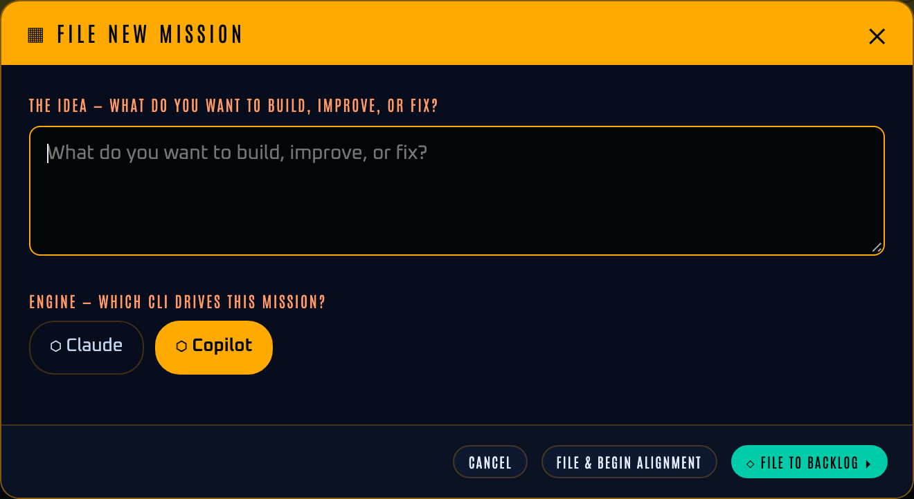
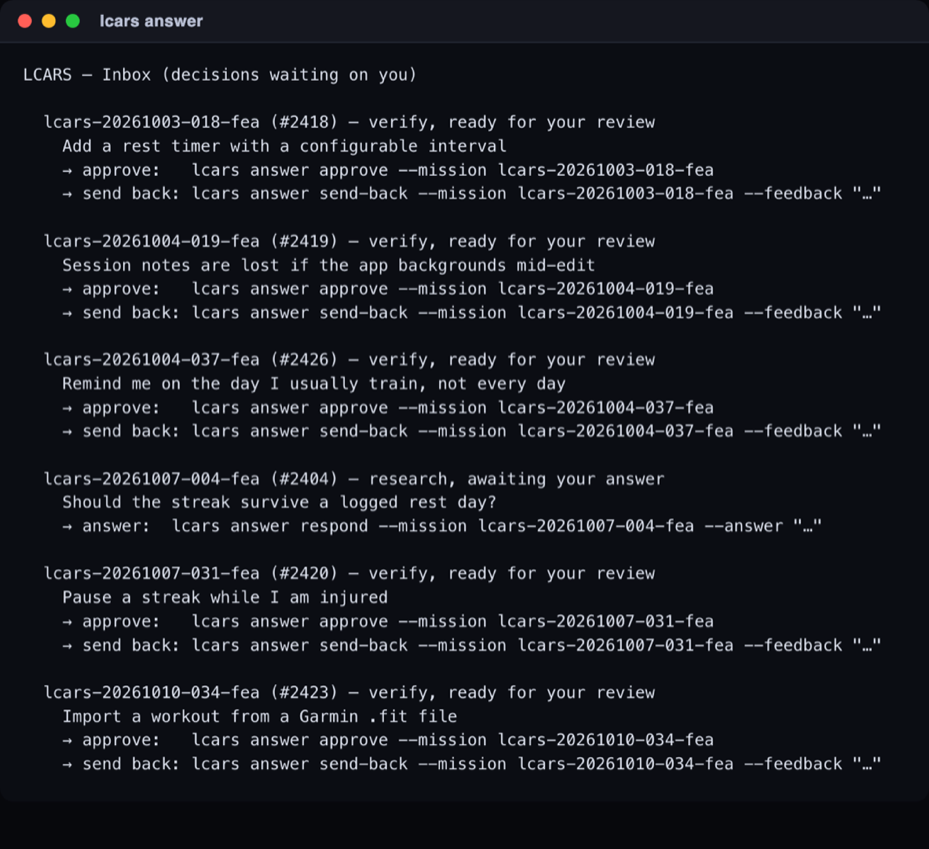
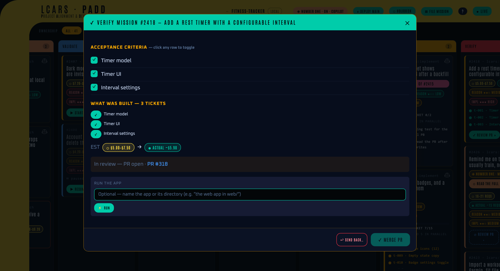
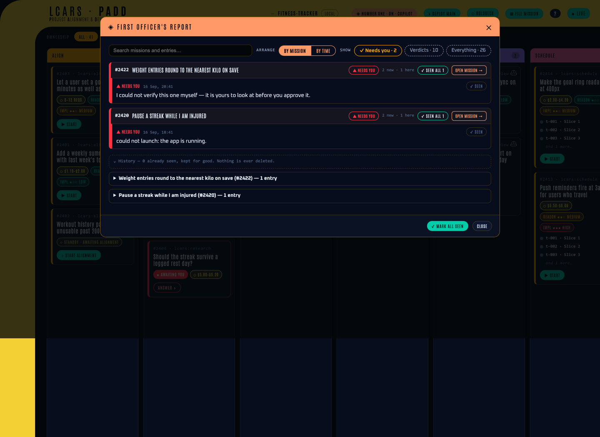
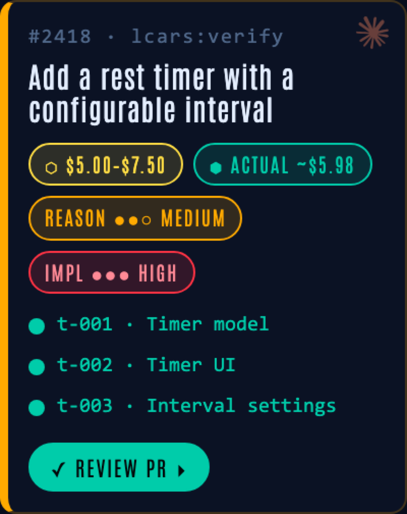
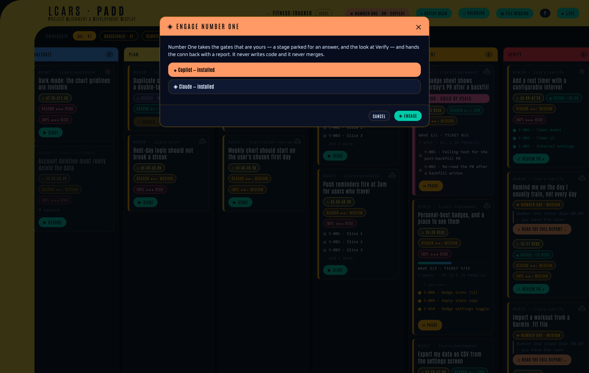

LCARS
You describe what you want. LCARS builds it and brings you back a pull request.

LCARS is a harness that sits on top of an AI coding CLI — Claude Code or the GitHub Copilot CLI — and runs a whole piece of work end to end. An idea goes in; it is sharpened into a spec, researched, planned, broken into small tickets, built test-first, and handed back to you as a branch and a pull request. It runs unattended between those two points and interrupts you only when a real decision is needed. You keep the decisions. It keeps the typing.
It installs once and works in any repo, leaving zero files in your working tree. The board above — the viewscreen — is the usual way to drive it, and everything on it is also a terminal command. The project does not have to exist yet: point LCARS at an empty folder and it recommends a stack, builds a running skeleton with a real test system, and proves one thin slice end to end before any feature work starts.
What it does
Each piece of work is a Mission: one human intent, on its own branch, mirrored as a GitHub issue, moving through eight Stages as a card on the board. Many Missions run at once and merge one at a time, when you say so.
1Align you
A structured interview — one question at a time, each with a recommended answer — that turns a rough idea into a written spec, then prices the work before anything is spent.
2Research auto
Up to twenty open questions, each sent to its own independent agent that comes back with a recommendation and its reasons.
3Validate auto
The findings are synthesised into a plan. It stops for you only if a finding changes what gets built, not how.
4Plan auto
The plan becomes small tickets, each one a vertical slice owning a single behaviour.
5Plan Review auto
A fresh reviewer with no memory of the planning audits every ticket for size, coupling and testability, and sends bad ones back.
6Schedule auto
Tickets are ordered into waves by their dependencies, and each becomes a sub-issue under the Mission.
7Implement auto
One test-first worker per ticket, checked afterwards by machine: its new tests must fail before its change and pass after it, any edit to an existing test must be declared with a reason, and the whole suite must stay green.
8Verify you
You read the diff, run the app, and either approve — which opens the pull request — or send it back with a note.
Install
- One AI coding CLI — Claude Code or the GitHub Copilot CLI. LCARS detects which ones are installed and uses one of them. Both installed is fine; you pick per Mission.
gh, signed in (gh auth login) — for issues, labels and pull requests.
git clone https://github.com/roferg/lcars.git cd lcars ./install.sh
./install.sh links the commands into the Claude Code
skills directory, and registers this clone as a Copilot CLI plugin too when
Copilot is installed. It also puts five real programs on your
PATH at ~/.local/bin:
lcars-viewscreen (alias
lcars-serve) opens the board,
lcars-launch runs a Mission's app, and
lcars-buddy and
lcars-autopilot are the companion and the
hand-over-the-loop mode. If ~/.local/bin is not on your
PATH, the installer says so loudly and prints the exact line
to add to your shell profile.
Then, inside the project you want to ship work in (not this repo):
cd ~/path/to/your-project lcars init # one-time: per-repo state + the GitHub labels
lcars <verb> (lcars init,
lcars file, lcars answer, …) are
skills — you type them to your AI CLI inside the repo, not into
a shell. lcars-viewscreen is a real program and runs in any
plain terminal.Updating is git pull here — the skills are
symlinked, so they update in place. Re-run ./install.sh only
for brand-new commands, and lcars update inside a project to
absorb new labels and config keys.
Five minutes
1 · Open the board
lcars-viewscreen --open
In a plain terminal, in your project. It starts a local server (Python standard library only — no npm, no build step), picks a free port, and opens the board. Watching it costs nothing: the board itself never calls a model.
2 · File an idea
Press FILE MISSION, describe what you want in plain language, and pick which CLI should do the work. Begin the alignment interview now, or park it in the backlog and come back to it.

3 · Walk away
The Mission advances itself through Research, Validate, Plan, Plan Review, Schedule and Implement, the card showing the stage, the cost so far and the ticket it is on. Nothing needs you until something does.
4 · Answer what it asks
When LCARS genuinely needs you, the card turns red and says so, and you
get a notification. Everything waiting on you is also in one list — on the
board, or in the terminal with lcars answer.

5 · Approve it
At Verify you see what you asked for beside what was built, the estimate beside the real cost, and the open pull request. ⚡ RUN starts the built app so you can look at it before you decide. Then merge it, or send it back with a note.

The commands
In the order you meet them. lcars-… names are real
programs; the rest are skills you ask your AI CLI for, inside the repo.
lcars init— per-repo setup: local state and the GitHub labels. Once.lcars-viewscreen— open the board (aliaslcars-serve).lcars file— turn a free-form idea into a Mission.lcars/lcars run <id>— do the obvious next thing;--stepadvances one Stage.lcars status— the board in a terminal;--watchfollows a run live.lcars answer— the one inbox for everything waiting on you, approve included.lcars-launch— start a Mission's app so you can look at it;--stopends it.lcars log— describe bugs you found; each becomes a linked bug Mission.lcars resolve-logs— drive those bugs to one re-verify gate, not one each.lcars pause/lcars resume— stop at the next safe boundary, and go again.lcars adopt <issue>— take a Mission over on this machine from its issue alone.lcars xo— engage or stand down Number One, and read his report.lcars-buddy/lcars-autopilot— the ride-along, and handing it the loop.lcars update/lcars version— absorb agit pull, and say where you are.
What you get
The viewscreen
A local board showing every Mission as a card in its Stage column, with live progress streamed as it happens. Every button on it maps to a command, so the board and the terminal never disagree. A Mission belongs to a person, not a laptop: you can see Missions running on machines you do not have, you cannot drive someone else's by accident, and you can deliberately take one over.

The holodeck
When the thing you want is easier to draw than to describe, talk a mockup into existence instead. The holodeck renders it live as you discuss it, can learn your project's existing look in one read-only pass, and then hands the finished drawing to a Mission that builds it.

Number One
A first officer who works your gates for you. He takes the stages parked for an answer and the look at Verify, grades what was built against what you asked for, and hands control back with a report — including a plain count of what he could not check. He never writes code and never merges.

Run the app, from the board
DEPLOY MAIN starts whatever is already merged on this machine; ⚡ RUN on a Verify card starts what the Mission just built. Both take a plain-English hint about which app to start. Looking at the running thing is the check no test suite performs for you.
The Mission Log
Found three things wrong while reviewing? Describe them in one go — screenshots included — and LCARS splits them into separate bug Missions linked to the parent, each grounded against the code that Mission actually wrote so the fix lands in the real thing rather than beside it.

Fix them all and you get one re-verify gate rather than one per bug.

Autopilot — handing over the loop
A software factory is the shape this pipeline already has: signals in, triaged into planned changes, built, tested, reviewed, out as merged pull requests. Autopilot is what lets you hand the running of it over. You give it a goal, it holds one alignment round with you to agree what to build, and then it works milestone after milestone, coming back only when it genuinely needs you.
The hard part of running a factory is not making the change — it is believing it. Producing a change is the cheap half now; verifying one you did not write is the expensive half, and that cost does not fall because the suite came back green. So autopilot does not ask to be trusted: it uses what it built, records what it saw, files what it finds with a reproduction quoting the real output, re-proves each fix on deliberately different data, writes down every decision it made alone, and says so plainly when a check found nothing.

Knowing the cost before you spend it
Once the spec is written, LCARS reads it against your actual repo, judges how much reasoning and how much implementation it needs, picks a model tier per Stage accordingly, and prices the run. The estimate sits on the card, and after the run the real figure sits next to it.

Two engines
LCARS runs on either CLI. It looks at what is installed on the machine and offers you only that; every picker — filing a Mission, starting one, the holodeck, Number One — greys out an engine that is not there rather than failing later.

- The whole pipeline, idea → PR — both.
- Every LCARS command — both.
- Autopilot and Number One — both.
- Cost shown before you spend — in dollars on Claude; in GitHub AI Credits on Copilot, with your plan's included allowance netted off.
- Maturity — Claude is the original path and is heavily used; Copilot is newer, proven idea → PR but with fewer miles.
copilot --allow-all-tools, not
--autopilot: the first auto-approves tool calls while leaving
LCARS's human gates intact, the second answers LCARS's questions
for you and blows straight through them. And LCARS's workers run
on Copilot's Claude tiers — the models that reliably
perform the file operations the pipeline depends on — so a run draws on
billable usage rather than Copilot's included tier.How it works
The loop that drives everything is plain shell, and it spends no tokens. It reads a Mission's state, picks the next Stage, starts a worker, records the result, and repeats. Every token LCARS spends is spent inside a worker doing a piece of thinking, on a model tier chosen for that Stage.
Every Stage runs cold. A worker is a fresh subprocess that sees only what the previous Stage wrote to disk — never its conversation. The prompt is assembled from file paths alone, so one Stage's reasoning cannot leak into the next, and each Stage has to record its decisions and its reasons, because the written artifact is the entire handover. If a Stage ever cannot isolate itself, the driver refuses loudly instead of quietly running inline.
Your checkout is never touched. Missions build in their own worktrees and commit through an ephemeral landing worktree. Switch branches with three Missions running and neither side notices.
Where state lives
All of it is under .git/lcars/ — inside
.git/, so git never tracks it and your working tree stays
clean. One directory per Mission holds its spec, its research, its plan,
its tickets' results, the questions it asked you and your answers, and an
append-only event log:
.git/lcars/
config.json engines, model tiers, test command, notifications
missions/<mission-id>/
state.json prd.md estimate.json research/ validated-plan.md
plan.json waves.json tickets/ pending.json answers.json events.jsonl
The board's data model is GitHub labels
lcars:align…lcars:done— which column a card is in.lcars:awaiting-human— it is waiting on you.lcars:mission/lcars:ticket— the thing that tracks the work, versus the work.
Where it stands
This is a real tool that is used daily, not a finished product. The pipeline works, end to end, and has shipped a great deal of its own code. It also ships imperfect on purpose: the point is to keep using it, find where it falls down, and fix that — rather than to wait until it is polished.
lcars-viewscreen to see it. Expect all of this to keep
changing.Contributing
Issues and pull requests are welcome.
CONTRIBUTING.md has the short version:
command source lives in skills/<name>/, every command has
a test in tests/, write the failing test first, and run
./install.sh before you try your change.
skills/<name>/SKILL.md one directory per command: what it does skills/<name>/<name>.sh its logic, kept in a script so it can be tested tests/<name>.test.sh one suite per command tests/run.sh runs every suite — the gate before a merge install.sh links the commands into the AI CLIs you have
CLAUDE.md is the same contract written for an AI agent working in this repo.
License
MIT — see LICENSE.